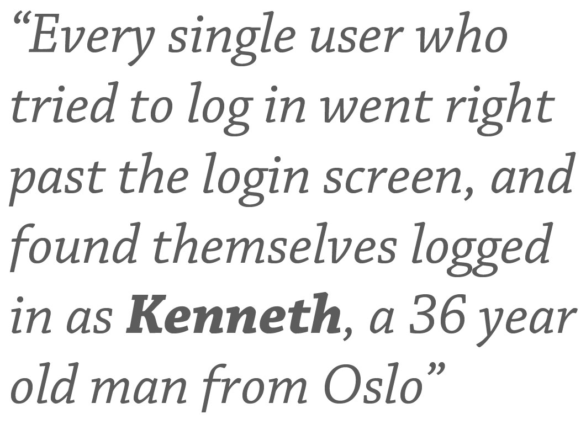

.front-page # Performance testing with Grinder ## A Simple Introduction to Web Performance Testing ROOTS 2012 Espen H. Halvorsen / Kjetil Valle 26/04/2012 --- .agenda # Agenda * Introduction * Grinder 101 * Tasks --- .middle.center # Why are you here? --- .middle.center # « Speed is a feature »™ – Jeff Athwood --- .middle.center # « Slow web pages sucks! » – The internet --- .middle.center ### <span class="quote"><span class="emph">Measurement</span> is the first step that leads <br>to control and eventually to improvement. <br><br>If you can't measure something, you can't <span class="emph">understand</span> it. <br>If you can't understand it, you can't <span class="emph">control</span> it. <br>If you can't control it, you can't <span class="emph">improve</span> it.</span> --- # Bad performance is newsworthy .center[ ] --- .middle.center # « Anything that can go wrong, <br>will go wrong » What happens when the whole country and their grandmothers come knocking? --- # ... No testing is bad for security! .center[  ] --- .middle.center # That's why you are here! --- # So what's this Grinder thingy? Main features: - A Java load testing framework. - Supports distributed testing using many load injector machines. - Freely available under a BSD-style open-source license. - Flexible scripting using Jython. For more, check out the [feature page](http://grinder.sourceforge.net/g3/features.html). --- # Grinder 101 ### Framework overview The Grinder framework is comprised of three types of processes (or programs): 1. *Worker processes*: Interprets test scripts and performs the tests using a number of parallel *worker threads*. 1. *Agent processes*: Long running process that starts and stops worker processes as required. 1. *The Console*: Coordinates agent processes, and collates and displays statistics. --- # Grinder 101 ### Framework overview .center[ <img alt="Overview of the Grinder framework" src="./images/grinder-overview.png"/ style="width: 70%;"> ] --- # Grinder 101 ### Framework overview .center[ <img alt="Overview of the Grinder framework" src="./images/grinder-overview-focus.png"/ style="width: 70%;"> ] --- # Grinder 101 ### Tests and test scripts The tests are defined in *test scripts*, which are run by the worker threads. * A *test* is a unit of work for which Grinder record statistics. * Each test has a description, and an unique identification number. * Different actions, e.g. web page requests, can be tied to the same test, in which case Grinder will aggregate the results. --- # Grinder 101 ### Test configuration Grinder agents are configured from a `.properties` files. These files can be viewed as *test scenarios*, as they contain a combination of what to test (which script), and how hard to test (how many workers, etc). * Defaults to `grinder.properties` unless one is specified at startup. * Used for configuring everything from logging to the number of worker processes/threads. * Specifies which *test script* to run, and how many times. * Can also contain custom properties for use within the test scripts. --- # Grinder 101 ### Test output Grinder outputs test results to file. Most important are `data_host_n.log` and `out_host_n.log`. - *host* is the hostname of the machine running the worker, and *n* is the ID of the worker thread. - `data_host_n.log` contains detailed information about the execution of each test in CSV-format. - `out_host_n.log`contains an overview of the test execution, and a summary of the results. Another file, `errors_host_n.log`, is generated whenever the test scripts crash, and contains the stacktraces. --- # Grinder 101 ### Test output Example excerpt from `data_host_n.log` .no-highlight Thread, Run, Test, Start time (ms since Epoch), Test time, Errors 1, 0, 1, 1333975793927, 7, 0 0, 0, 1, 1333975793927, 8, 0 1, 0, 2, 1333975793935, 0, 0 0, 0, 2, 1333975793935, 0, 0 ... And from `out_host_n.log` .no-highlight Tests Errors Mean Test Test Time TPS Time (ms) Standard Deviation (ms) Test 1 10 0 1.70 2.97 312.50 "first test" Test 2 10 0 0.40 0.49 312.50 "another test" Totals 20 0 1.05 2.22 312.50 --- # Grinder 101 ### A simple example The first thing we need is a test script: `example/script.py` .python from net.grinder.script.Grinder import grinder from net.grinder.script import Test def some_function(): run = grinder.getRunNumber() thread = grinder.getThreadNumber() print '> output #%d from worker thread %d' % (run, thread) class TestRunner: def __init__(self): self.test = Test(1, "test description").wrap(some_function) def __call__(self): self.test() --- # Grinder 101 ### A simple example Next, we need a configuration file: `example/scenario.properties` .no-highlight grinder.script = script.py grinder.threads = 2 grinder.runs = 5 grinder.useConsole = false grinder.logDirectory = log grinder.jvm.arguments: -Dpython.cachedir=/tmp -Xmx1000m --- # Grinder 101 ### A simple example Finally, we run the test. .bash java -cp lib/grinder.jar net.grinder.Grinder example/scenario.properties To simplify things we can also use the provided script. .bash ./startAgent.sh example/scenario.properties --- .middle.center # Tasks time for some hands-on practice --- .middle # Task 1: Measure URL request time ### Objectives: 1. Create a `Test` object with number and description 2. Wrap a `HTTPRequest` with the the test object. 3. Make grinder do a HTTP GET request to some URL every time the `__call__` method is invoced. For help getting started, review the [example script](https://github.com/kvalle/grinder-workshop/blob/master/example) and Grinder's [script gallery](http://grinder.sourceforge.net/g3/script-gallery.html). Read the detailed task descriptions at: [https://github.com/kvalle/grinder-workshop](https://github.com/kvalle/grinder-workshop) --- # Solution 1 TODO --- .middle # Task 2: Testing multiple URLs Write a scripts that reads `urls.text`, and then GETs each one in turn. Make sure you use different `Test` objects for each URL, to make Grinder record their response times individually. ### Objectives: 1. Read the URLs from file. 1. Create a `Test` for each URL. (Remember to wrap a `HTTPRequest`, like in the task 1.) 1. GET all the URLs every time the test script is run. --- # Solution 2 TODO --- .middle # Task 3: Validating the responses ### Objectives: Enhance the script from task 2 to inspect the responses, and validate them against a set of requirements. 1. Capture the `HTTPResponse` object returned from the `GET` method. 1. Validate the expected properties of the response using the [script API](http://grinder.sourceforge.net/g3/script-javadoc/HTTPClient/HTTPResponse.html). 1. If a response does not fulfil the requirements, fail that particular test. --- # Solution 3 TODO --- .middle.center # Questions?